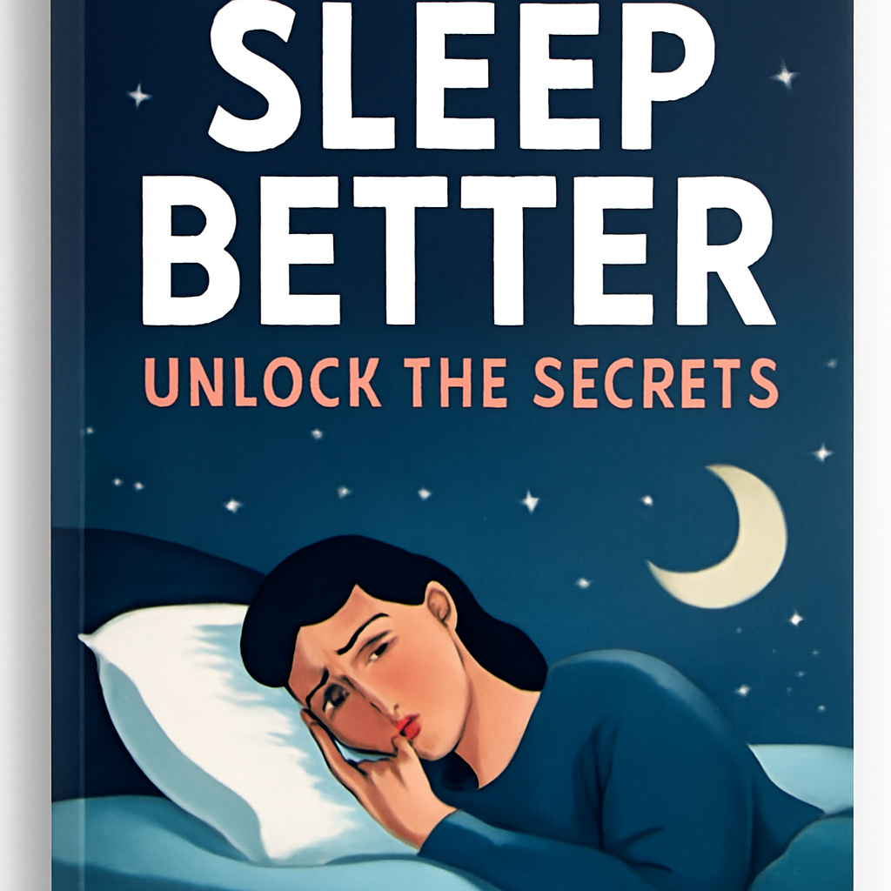

Sleep is the unsung hero of our daily lives! While it often takes a backseat to our busy schedules, developing healthy sleep habits can transform your well-being, boost your productivity, and elevate your mood. Are you ready to unlock the secrets to a more restful night? Let’s dive in!
Consistency is key! Going to bed and waking up at the same time each day, even on weekends, helps regulate your body’s internal clock. This synchronization can make falling asleep easier and improve the quality of your rest. Aim for 7-9 hours of sleep each night to recharge your body and mind.
Your bedroom should be a sanctuary! Make it dark, quiet, and cool to establish the perfect sleep setting. Consider blackout curtains, earplugs, or a white noise machine to minimize disturbances. Investing in a comfortable mattress and pillows can also make a world of difference. After all, who doesn’t love sinking into a cozy bed after a long day?
Our gadgets can be both a blessing and a curse. The blue light emitted by screens can interfere with your body’s production of melatonin, the hormone that signals sleep. Aim to turn off electronic devices at least an hour before bedtime. Instead, indulge in calming activities such as reading a book, practicing yoga, or meditating to prepare your mind for sleep.
What you consume can significantly affect your sleep quality. Avoid heavy meals, caffeine, and alcohol close to bedtime. These can disrupt your sleep cycle and leave you tossing and turning. Instead, opt for a light snack if you’re hungry, like a banana or a handful of nuts, which can promote relaxation.
Stress and anxiety can be major sleep disruptors. Incorporating relaxation techniques into your evening routine can help clear your mind and ease tension. Try deep breathing exercises, progressive muscle relaxation, or guided imagery to promote a sense of calm before bedtime.
Lastly, don’t ignore the cues your body gives you! If you’re feeling tired, honor that feeling and allow yourself to rest. Quality sleep is vital for mental clarity, emotional stability, and overall health.
---
Embrace these healthy sleep habits, and watch how they can transform your life! Remember, a good day starts with a good night’s sleep. Sweet dreams! 🌙
Unlock the secrets to healthy sleep habits and transform your well-being! With a consistent sleep schedule, a cozy environment, and relaxation techniques, you can enhance your sleep quality and boost your mood.

| Step | Model | Status | Time | Cost |
|---|---|---|---|---|
| article | openai/gpt-4o-mini | ok | 9.5s | $0.0003 |
| summary + social posts | openai/gpt-4o-mini | ok | 2.7s | $0.0002 |
| header image | dall-e-3 | failed | 0.2s | - |
| narration | google/gemini-3.1-flash-tts-preview | ok | 36.7s | $0.0075 (est.) |
| header image | gpt-image-1 | ok | 41.9s | $0.0162 |
| thumbnail | gpt-image-1 | ok | 55.6s | $0.0109 |
| narration check | gpt-4o-mini-transcribe | ok | 3.4s | - |
Total: $0.0351 - 150.1s of API time